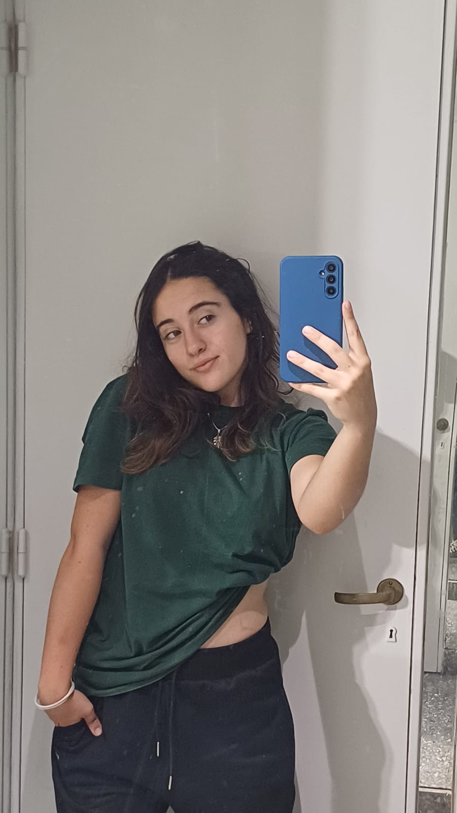

Somos Ana Simone y Candelaria Villarreal, estudiantes de la carrera Diseño Multimedial
en la UNLP. Este proyecto es parte de la materia Tecnología Multimedial, se basó en crear un juego
utilizando el lenguaje p5js y una programación orientada a objetos, además de la página web creada
con HTML y CSS

Ana, proveniente de Villa Elisa, Provincia de Buenos Aires. Actualmente estudiando la Lic. de Diseño
Multimedial. Jugadora de voley en la UNLP y fanática de Racing.
Candelaria, proveniente de La Plata, Provincia de Buenos Aires. Actualmente estudiando la Lic. de Diseño
Multimedial. Jugadora de hockey en GELP y fanática de ese mismo club.